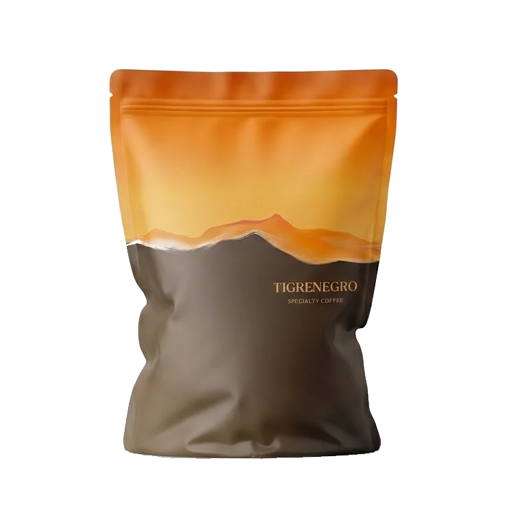

Volcanes · Amboró · Bolivia
Intensidad que no necesita anunciarse.
Un café con propósito de altísima calidad.
Nace para sostener la conservación de Yanapuma. Y por eso solo puede ser excepcional.

El producto
La montaña, en una bolsa.
Variedades exóticas cultivadas bajo sombra, cosechadas a mano y llevadas hasta su mejor expresión en taza.
Elige tu variedad y cómo la prefieres. Nuestro equipo de ventas te atiende por WhatsApp. Bolsas de 200 g, en grano o molido.
Explorar variedadesEl banco genético
Siete variedades. Una sola altura.
Toca una variedad para ver sus notas y pedirla. Unas veinte más están en camino.
Nuevas variedades exóticas
Llegan con la próxima cosecha. Las más especiales están por venir.
¿Tienes una cafetería o buscas café verde? Bolsas de 5 kg y lotes en verde. Escríbenos ↗
La diferencia
Lo extraordinario se cultiva.
Entre la luz y la sombra, se mueve el jaguar. También el café que cultivamos.
Terroir y proceso


- 01 / 03
Variedades exóticas
Un banco genético único en Bolivia, con variedades que hoy no se producen en el país.
- 02 / 03
Terroir único
Tierra negra rica en materia orgánica, microclimas y la humedad del Amboró.
- 03 / 03
Beneficio propio
Equipos Palini Alves, galpón artesanal con laboratorio y secador tipo invernadero.
Terroir y proceso
De la tierra a la taza.
Cultivamos al borde del bosque, entre 1.200 y 1.750 msnm, donde la humedad del Amboró y la tierra negra hacen posible una calidad singular.
Sembramos bajo sombra, en antiguos chacos que hoy reforestamos, sin tocar el bosque. Y tenemos la infraestructura y el conocimiento para llevar el café hasta su consumo final.
El proceso, paso a paso


El proceso, paso a paso
- Paso 01Cultivo
Germinador
Las semillas seleccionadas se siembran en almácigos o camas de arena hasta que brotan en pequeños tallos, llamados «fósforos».
- Paso 02Cultivo
Vivero
Las plántulas se trasplantan a bolsas individuales y crecen bajo sombra hasta tener la fuerza para ir al campo.
- Paso 03Cultivo
Cafetal
Los plantines más robustos se siembran en su lugar definitivo, donde el cafeto crece, florece y da cerezas maduras año tras año.
- Paso 04Beneficio
Beneficio húmedo
En la beneficiadora, con equipos Palini Alves, se despulpan las cerezas para retirar la cáscara y se remueve el mucílago, la capa pegajosa que envuelve el grano.
- Paso 05Beneficio
Secado
El café en pergamino se extiende al sol o en nuestro secador tipo invernadero hasta bajar su humedad a un nivel estable, cercano al 10–12 %.
- Paso 06Beneficio
Trillado
Se retira la cáscara de pergamino del grano seco para obtener el café verde, o «café oro», listo para la selección.
- Paso 07La taza
Tostado
El grano verde se somete a altas temperaturas que transforman su química y liberan su aroma, su cuerpo y su perfil de sabor.
- Paso 08La taza
Molido
El café tostado se muele al grosor exacto para cada método de preparación: fino, medio o grueso.
- Paso 09La taza
Filtrado
El agua caliente atraviesa el café molido y extrae sus aceites, aromas y sabores. Así nace la taza. Lo hacemos con Graycano ↘
Café con propósito
1% cultivado. 99% conservado.
Nos limitamos a cultivar como máximo el 1% del territorio que protegemos. Con tan poco espacio, la única forma de crecer es mejorar la calidad.
Conoce YanapumaEn cifras
Pequeño por diseño. Preciso por elección.
- 11
- hectáreas cultivadas
- 99%
- del territorio conservado
- 7
- variedades hoy
- ~20
- variedades en camino
Bajo la dirección de Lean Coffee Management, quienes han trabajado con fincas ganadoras de Taza de Excelencia en El Salvador y Guatemala.
Método de filtrado
Graycano. Filtrar el momento.
Somos representantes de Graycano, la marca alemana de equipos para café de especialidad creada en Leipzig. Su gotero es la forma en que recomendamos preparar TigreNegro.
- Núcleo de aluminio fundidoPrácticamente irrompible. Retiene y reparte el calor para una extracción constante.
- Lava RibsNervaduras que guían el agua de forma pareja por la cama de café, para notas más brillantes y dulces.
- Cámaras de aireAtrapan el vapor del filtrado y mantienen estable la temperatura.
- Funda de corchoHecha a mano en Portugal. Protege las manos y aísla la preparación.
- Filtros GC01Papel de pulpa de madera japonesa, pensado para este gotero.
Conoce el origen